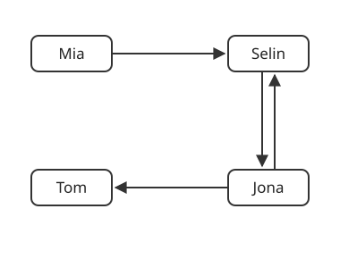
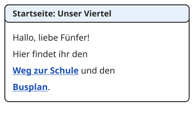
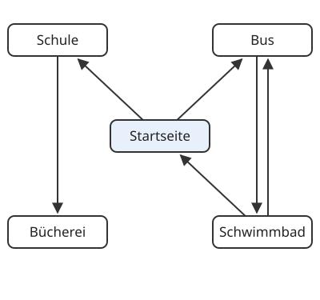

Medienübersicht
Alle Bilder, Audios und Videos dieser App mit ihrer Quelle und ihrer Lizenz.
Bilder

images/baum-zimmer.svg© CC-BY-4.0Verwendet auf: Das brauchst du hier

images/galerie-1.svg© CC-BY-4.0Verwendet auf: Das brauchst du hier

images/busnetz-de.svg© CC-BY-4.0Verwendet auf: Vom Baum zum Graphen

images/busnetz-en.svg© CC-BY-4.0Verwendet auf: Vom Baum zum Graphen

images/freunde.svg© CC-BY-4.0Verwendet auf: Vom Baum zum Graphen

images/drei-netze.svg© CC-BY-4.0Verwendet auf: Vom Baum zum Graphen

images/galerie-2.svg© CC-BY-4.0Verwendet auf: Vom Baum zum Graphen

images/pfeile.svg© CC-BY-4.0Verwendet auf: Kanten mit Richtung

images/stadtfuehrer-de.svg© CC-BY-4.0Verwendet auf: Ein Graph aus Seiten

images/stadtfuehrer-en.svg© CC-BY-4.0Verwendet auf: Ein Graph aus Seiten

images/startseite-de.svg© CC-BY-4.0Verwendet auf: Ein Graph aus Seiten

images/startseite-en.svg© CC-BY-4.0Verwendet auf: Ein Graph aus Seiten

images/entwurf-de.svg© CC-BY-4.0Verwendet auf: Der Stadtführer der 7b

images/entwurf-en.svg© CC-BY-4.0Verwendet auf: Der Stadtführer der 7b

images/galerie-3.svg© CC-BY-4.0Verwendet auf: Der Stadtführer der 7b